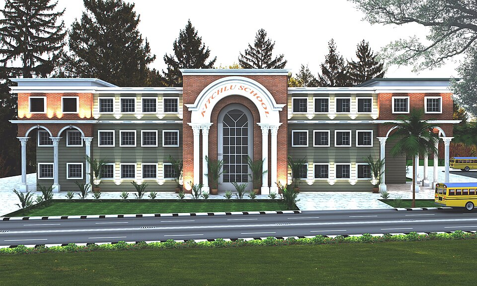

उत्तर प्रदेश के मुख्यमंत्री योगी आदित्यनाथ की माता सावित्री देवी का निधन
उत्तर प्रदेश के मुख्यमंत्री योगी आदित्यनाथ की माता सावित्री देवी का लंबी बीमारी के बाद उत्तराखंड में उनके पैतृक गांव में निधन हो गया।
उत्तर प्रदेश के मुख्यमंत्री योगी आदित्यनाथ की माता सावित्री देवी का गुरुवार सुबह उत्तराखंड के पौड़ी गढ़वाल जिले में स्थित उनके पैतृक गांव पंचूर में निधन हो गया। वह 91 वर्ष की थीं और पिछले कुछ समय से अस्वस्थ चल रही थीं। उन्होंने सुबह करीब छह बजे अंतिम सांस ली।
उनके निधन पर राजनीतिक गलियारों में शोक की लहर है। उत्तराखंड के मुख्यमंत्री पुष्कर सिंह धामी, उत्तर प्रदेश के उपमुख्यमंत्री ब्रजेश पाठक और गोरखपुर के सांसद रवि किशन समेत कई प्रमुख नेताओं ने गहरा शोक व्यक्त किया है और शोकाकुल परिवार के प्रति संवेदनाएं प्रकट की हैं।
और पढ़ें
 राष्ट्रीय
राष्ट्रीयवाराणसी के नमो घाट पर 'भजन क्लबिंग' का आयोजन, पीएम मोदी ने की युवाओं के उत्साह की सराहना
वाराणसी के नमो घाट पर चार दिवसीय गंगा महोत्सव के दौरान 'भजन क्लबिंग' का आयोजन किया गया। आधुनिक बीट्स पर पारंपरिक भजनों के इस कार्यक्रम में युवाओं ने भारी उत्साह दिखाया, जिसकी प्रधानमंत्री नरेंद्र मोदी ने सराहना की है।
राष्ट्रीयमुख्यमंत्री योगी आदित्यनाथ ने मां सावित्री देवी को दी अंतिम विदाई
उत्तर प्रदेश के मुख्यमंत्री योगी आदित्यनाथ अपनी मां सावित्री देवी के निधन पर अंतिम यात्रा के दौरान भावुक नजर आए। उन्होंने पार्थिव शरीर को कंधा दिया और हरिद्वार में अंतिम संस्कार किया जाएगा।
राष्ट्रीयबाराबंकी में पूर्वांचल एक्सप्रेसवे पर भीषण सड़क हादसा, पिकअप और एंबुलेंस की टक्कर में पांच की मौत
उत्तर प्रदेश के बाराबंकी जिले में पूर्वांचल एक्सप्रेसवे पर एक पिकअप और एंबुलेंस के बीच हुई टक्कर में पांच लोगों की मौत हो गई। सूचना मिलने पर पुलिस और राहत दल मौके पर पहुंचे।

राष्ट्रीयसीबीएसई कक्षा 10 गणित की परीक्षा 17 फरवरी को होगी आयोजित
केंद्रीय माध्यमिक शिक्षा बोर्ड (CBSE) ने 10वीं कक्षा की गणित परीक्षा की तारीख घोषित कर दी है। परीक्षा 17 फरवरी को सिंगल शिफ्ट में होगी।